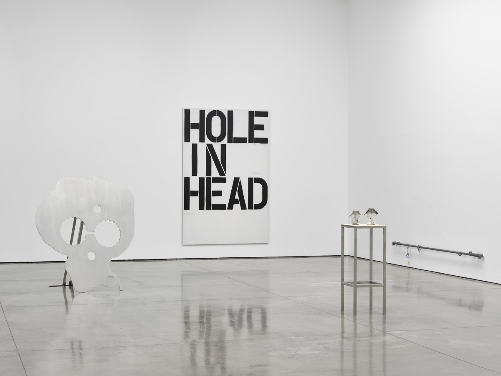

Collider Gallery is an independent artist-run gallery space that operates with the mission of providing a platform for emerging artists to deconstructing the traditional forms of artistic representation. Collider Gallery is dedicated to creating an environment where artists can showcase their work and be part of a community that supports their growth and development, ourside of the traditional instituational framework that governs contemporary practice.
(+ Contact)
Alte Papierformate, Teilung zum Quadrat
Ulrick Ruckriem
Pictured:
Untitled (2023),
Granite Bleu de Vire (2023)
(+ More)
Ulrich Rückriem (born 30 September 1938) is a German sculptor notable for his monumental stone sculptures. He lives and works in Cologne and London. His abstract works of art are often assigned to the style of minimalism and process art.
1 March - 16 March 2023
From the Vapor of Gasoline
David Hammons
Pictured:
Installation Images (2023)
(+ More)
In the years after the Second World War, a golden age of economic growth seemed set to fulfil the historian James Truslow Adams’ celebrated description of the American Dream ‘of a land in which life should be better and richer and fuller for everyone, with opportunity for each according to ability’. By the end of the 1960s, a flurry of political assassinations, civil unrest and the escalation of the Cold War precipitated a national crisis of confidence that reached its apogee with the 1973 oil embargo.
The title of this exhibition, borrowing from the evocative slogan painted across Jean-Michel Basquiat’s Peruvian Maid (1985), conjures a society running on empty. Its artists – loosely linked by a network of personal and professional relationships, as between Cady Noland and Steven Parrino, Jenny Holzer and Barbara Kruger, Richard Prince and Christopher Wool – chronicle a dramatic ideological shift. If the prevailing atmosphere is of disillusion, then it is not without hope: with the end of a dream comes a renewed engagement with reality.
20 March - 2 April 2023
